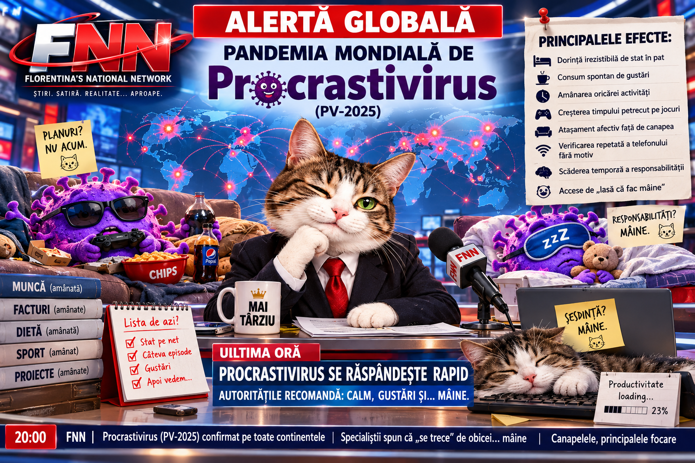

ALERTĂ GLOBALĂ: Pandemia mondială de Procrastivirus (PV-2025) se extinde. Oamenii sunt sfătuiți să nu intre în panică. Pot intra mâine.

O nouă pandemie provoacă îngrijorare la nivel mondial după ce un agent complet necunoscut, denumit provizoriu Procrastivirus (PV-2025), a început să se răspândească într-un ritm alarmant. Spre deosebire de alte virusuri, PV-2025 nu pare să atace plămânii, sistemul digestiv sau alte organe.
Atacă planurile.
Primele cazuri au fost raportate în urmă cu câteva zile în Republica fictivă Lenevia de Nord, o țară mică despre care redacția FNN nu știa nimic până acum și despre care, din motive evidente, nici Google Maps nu pare foarte convins.
Potrivit informațiilor obținute de FNN din surse care au promis că vor explica mai multe mâine, pandemia ar fi pornit în urma unui accident produs la Institutul Național de Cercetări Foarte Importante din capitala leneviană.
Cercetătorii studiau o substanță experimentală despre care se presupunea că ar putea crește productivitatea umană.
Experimentul trebuia să înceapă luni.
A început miercuri.
Un cercetător trebuia să închidă recipientul principal înainte de pauza de prânz, însă și-ar fi spus:
„Lasă că îl închid după ce mănânc.”
După masă a considerat că este mai bine să bea întâi o cafea.
După cafea și-a verificat telefonul.
După ce și-a verificat telefonul a văzut un videoclip de șapte minute.
După videoclip a apărut automat altul.
La aproximativ trei ore după aceea și-a amintit de recipient.
Era prea târziu.
În laborator se formase deja o ceață violetă misterioasă, iar trei cercetători stăteau pe canapea și discutau dacă alarma de evacuare chiar trebuie apăsată imediat sau dacă mai poate aștepta puțin.
Unul dintre ei ar fi declarat:
„O apăsăm. Evident că o apăsăm. Dar nu trebuie să facem chiar totul în secunda asta.”
Alarma a fost activată a doua zi.
Simptomele sunt imposibil de ignorat. Mai ales mâine.
Specialiștii au observat că persoanele afectate de Procrastivirus nu prezintă febră, tuse sau dificultăți respiratorii. În schimb, manifestă o serie de simptome extrem de neobișnuite:
Pacientul își propune să facă ordine, dar înainte decide să stea cinci minute pe telefon.
Cele cinci minute durează aproximativ două ore și jumătate.
Persoana infectată poate deschide frigiderul fără să știe de ce, îl închide, pleacă, apoi revine după șapte minute pentru a verifica dacă între timp a apărut ceva nou.
Un alt simptom frecvent este atașamentul inexplicabil față de canapea.
În cazurile moderate, pacientul spune:
„Mă ridic imediat.”
În cazurile severe:
„De mâine mă organizez serios.”
În cazurile considerate critice:
„De luni schimb tot.”
Medicii avertizează că afirmația „de luni” este deosebit de periculoasă, deoarece nu precizează despre care luni este vorba.
Au fost raportate inclusiv persoane care și-au făcut liste cu lucrurile pe care trebuie să le facă, după care s-au simțit suficient de productive încât să considere activitatea încheiată.
Un pacient ar fi scris:
Curățenie.
Sport.
Plătit facturi.
Cumpărături.
Terminat proiect.
După care a subliniat titlul „LISTA DE AZI”, a desenat două steluțe lângă el și s-a dus să se uite la televizor.
Autoritățile încearcă să reacționeze
Organizația Mondială pentru Lucruri Care Ar Trebui Rezolvate Urgent, instituție care nu există și pe care FNN tocmai a inventat-o, ar fi convocat o ședință extraordinară.
Ședința era programată la ora 09:00.
La 09:17, nimeni nu intrase.
La 09:42, unul dintre participanți a trimis mesajul:
„Vin imediat.”
La 10:26, reuniunea a fost reprogramată.
Pentru mâine.
Autoritățile din mai multe state au început între timp campanii de informare și recomandă populației să urmărească apariția simptomelor.
Printre măsurile propuse se numără limitarea expunerii la canapele extrem de confortabile, evitarea deschiderii aplicațiilor de socializare „doar pentru cinci minute” și păstrarea telecomenzii la o distanță suficientă încât ridicarea din pat să fie obligatorie.
Măsura din urmă a fost însă criticată ca fiind „nejustificat de dură”.
Economia mondială începe să resimtă efectele
Primele consecințe economice sunt deja vizibile.
Mai multe companii au raportat o creștere dramatică a numărului de e-mailuri care conțin expresiile „revin”, „mă ocup imediat”, „până la sfârșitul zilei” și temutul „am văzut mesajul”.
Într-o companie, un document care trebuia finalizat marți a fost redenumit:
FINAL.docx
apoi:
FINAL2.docx
apoi:
FINAL_BUN.docx
apoi:
FINAL_BUN_ACUM_CHIAR_FINAL.docx
Documentul nu este terminat.
Experții cred că aceasta ar putea reprezenta prima dovadă clară de transmitere digitală a Procrastivirusului, dar cercetările continuă.
Sau vor continua.
Cândva.
Există și persoane aparent imune
În mod surprinzător, oamenii care se trezesc la ora 05:00, fac sport, gătesc pentru trei zile, spală hainele, răspund la toate e-mailurile și până la ora 08:30 spun „gata, ce mai avem de făcut?” par să prezinte o rezistență inexplicabilă.
Cercetătorii încearcă să îi studieze.
Deocamdată nu au reușit să îi prindă, deoarece oamenii respectivi sunt deja ocupați cu altceva.
În schimb, cea mai vulnerabilă categorie pare să fie reprezentată de persoanele care se așază în pat spunând:
„Nu dorm. Stau puțin.”
Acest comportament a fost asociat cu dispariții temporare de două până la patru ore, urmate de trezirea bruscă și întrebarea:
„Cât e ceasul?!”
Panica nu este recomandată
Specialiștii insistă că populația nu trebuie să intre în panică.
În primul rând, panica necesită energie.
În al doilea rând, majoritatea persoanelor infectate au declarat că intenționează categoric să intre în panică, dar ceva mai târziu.
Pentru moment, oamenilor li se recomandă să își păstreze calmul, să își noteze sarcinile importante și, în măsura posibilităților, să le și execute — o recomandare considerată controversată de o parte semnificativă a populației.
Între timp, cercetătorii din Lenevia de Nord susțin că lucrează deja la un tratament împotriva PV-2025.
Formula este aproape gata.
Mai trebuie făcute câteva teste.
Documentația trebuie completată.
Un cercetător trebuie să trimită un e-mail.
Altul trebuie să cumpere niște materiale.
Șeful laboratorului trebuie să semneze două formulare.
Toată lumea este optimistă.
Tratamentul ar putea fi disponibil foarte curând.
Cel mai probabil mâine.
FNN va continua să urmărească evoluția pandemiei mondiale de Procrastivirus și va reveni cu informații noi imediat ce redacția termină ce avea de făcut.
Adică…
mai târziu.
Acesta este un pamflet. Procrastivirus (PV-2025), Lenevia de Nord și instituțiile descrise în articol sunt fictive. Orice asemănare cu momentul în care ai spus „fac mâine” și n-ai făcut nici mâine este, din păcate, responsabilitatea ta. XD
Materialele satirice/pamflet sunt prezentate ca atare; materialele marcate explicit altfel pot avea alt caracter editorial.